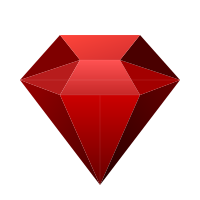

Scarlet Base.Scarlet Base est un compagnon de productivité hors-ligne ultra-rapide. Organisez votre calendrier, gérez vos tâches et écrivez vos notes en Markdown avec l'assurance que vos données restent 100% privées.
Une expérience fluide, sans compromis sur la confidentialité ou la résilience.
Fini les bases de données corrompues après un crash. Scarlet Base effectue des sauvegardes automatiques en tâche de fond et garantit des écritures physiques sécurisées sur votre disque.
Rédigez vos notes au format Markdown avec coloration syntaxique complète, rendu interactif instantané et liaisons bidirectionnelles dynamiques avec vos tâches quotidiennes.
Propulsé par Electron et Vite, Scarlet Base démarre instantanément, consomme un minimum de ressources et s'exécute entièrement en local, sans aucune dépendance cloud.
Un design néo-rétro épuré doté de transitions fluides, de contrôles de fenêtres interactifs escamotables et de thèmes personnalisés (Azure, Scarlet, etc.) pour épouser votre style.
Cliquez sur les éléments interactifs de la maquette pour découvrir les fonctionnalités intégrées.
Parfait pour les développeurs. Copiez-collez l'une des commandes ci-dessous pour installer et démarrer instantanément.
Installez Scarlet Base nativement sur votre système d'exploitation.
Windows 10 / 11
Ubuntu, Debian, Fedora, Arch...
macOS Monterey ou supérieur